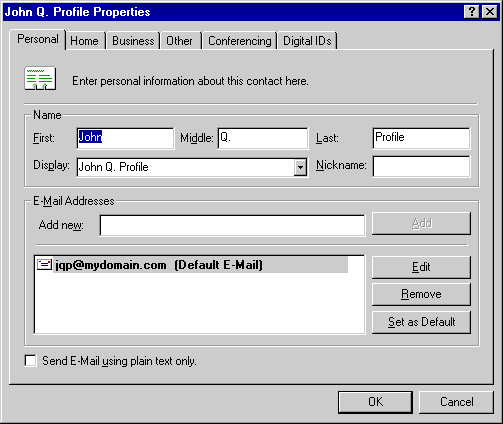
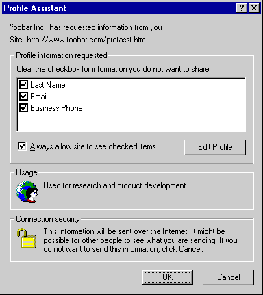
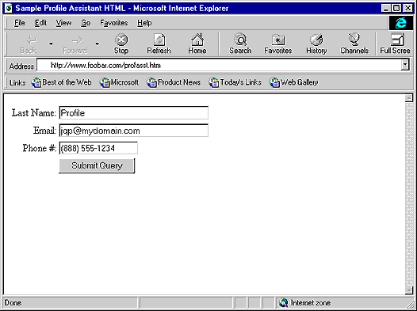

| ||
This document describes how Web publishers can use the new Microsoft® Internet Explorer 4.0 Profile Assistant to collect profile information from the user. All information submitted to the Web server requires the user's approval.
The Platform for Privacy Preferences (P3) is a World Wide Web Consortium (W3C) project determining the overall architecture for enabling privacy on the Web. The Profile Assistant in Internet Explorer 4.0 is the first implementation of the types of privacy capabilities enabled by P3.
This new architecture defines a means by which user profiles can be exchanged between Web clients and servers while respecting the user's right to privacy. This profile information is valuable, but it cannot be used by companies or service organizations unless a standard mechanism is defined by which the information can be programmatically accessed on either the client or the server. Such a mechanism must respect a user's privacy constraints. Therefore, a Web site cannot be allowed to retrieve user information to which it is not entitled. Sites should not be hindered, however, from accessing profile information with the informed consent of the user, as defined by the P3 architecture.
This article includes a description of the scripting object model exposed on the client user-agent (Internet Explorer 4.0). The new userProfile object allows Web publishers to create scripts in Web pages that request read access to private information within the constraints of the privacy guidelines defined by the P3 architecture. Note that Internet Explorer 4.0 does not yet allow for write access to the user profile as specified in the P3 architecture. Instead, Internet Explorer 4.0 implements a subset of the P3 schema, which is undergoing the standardization process at the W3C. To install the Profile Assistant, you must use either the "standard" or "full" installation option for Internet Explorer 4.0. The Profile Assistant is available only on the Microsoft® Windows® 95 and Windows NT® 4.0 versions of Internet Explorer 4.0.
The purpose of the Profile Assistant is to make it easy for users to share registration and demographic information with sites that require this information. The goal is to eliminate the need for users to repeatedly enter information such as their address or e-mail name for each site's registration page. This is accomplished by giving users complete control over access to their data, while at the same time maintaining user privacy. User information is stored securely in protected storage on the client computer. Web servers can request to read this information, but it is shared only if users give their consent in the Profile Assistant confirmation dialog box. This dialog box is required, and it is not possible to access this data without the user's permission.
In Internet Explorer 4.0, the user can enter data into the secure client profile storage by using an edit dialog box accessed through the Content tab in the View/Internet Options dialog box. This form allows the user to enter or change all data elements in the store. Note that the Profile Assistant is automatically populated with registration information collected from the user by Internet Explorer 4.0. If there is no data, or if you wish to edit the data previously collected, follow this simple process:
The following illustration shows a typical Profile Assistant data entry.

Authoring an HTML form for use with the Profile Assistant is accomplished by adding some scripting code to an HTML page. This makes retrofitting existing forms easy. Note that if your registration page is viewed frequently in the same session, you may want to write some scripting code to ensure that the user is prompted only once. Please view the source for the sample page (Proftest.htm) shown in the next section.
To be able to write scripts for the Profile Assistant, you need to first understand the Profile Assistant object and its associated methods. The object model consists of a single object, the userProfile object. This object is available to scripts running on Internet Explorer 4.0 through the HTML document object model as window.navigator.userProfile.
The following diagram shows the relation of objects in the object model.
window
|
+---navigator
|
+---userProfile
The userProfile object provides methods that allow a script to request read access to a user's profile information and also to perform read actions. Note that the requests are queued up before the action of reading or writing is performed. This simplifies the user's experience by prompting for profile release permissions once for a batch of requests. Web pages utilizing the Profile Assistant should follow this logic sequence:
clearRequest();
addReadRequest("Vcard.FirstName");
doReadRequest(10, "XYZ Corp.");
getAttribute("Vcard.FirstName");
The following excerpt is an example of a script written in JScript (compatible with ECMA 262 language specification) that can be run on Internet Explorer 4.0 to read various values from the user's profile information store.
Note User profile attributes are specified with the format Vcard.attribute. The Vcard_attribute format is no longer supported by Internet Explorer 4.0.
// This ensures that the request queue is in a clean, known state.
navigator.userProfile.clearRequest();
// Queue up a request for read access to multiple profile attributes.
navigator.userProfile.addReadRequest("Vcard.FirstName");
navigator.userProfile.addReadRequest("Vcard.Gender");
// Request access to specific information via a confirmation dialog box.
navigator.userProfile.doReadRequest(usage-code, "Foobar Inc.");
// Perform read operations to access the information.
name = navigator.userProfile.getAttribute("Vcard.FirstName");
gender = navigator.userProfile.getAttribute("Vcard.Gender");
// The script can now use the 'name' and 'gender' variables
// to personalize content or to send information back to the server.
An HTML page called Proftest.htm containing the HTML code shown in the next section is available in the Samples directory of the Internet Client SDK. This is a simple registration form that asks the user to enter a name, an e-mail address, and a telephone number. When navigating to this form, users will be prompted with a dialog box informing them that profile information is being requested. As you will see, there are several elements to this user interface:
The information provided on the dialog box helps the user verify who is requesting the data, choose which particular data elements (if any) to share with the Web publisher, and understand the intended usage as specified by the site. Clicking the OK button will add the information to the form. Users consenting to the information request will not be asked for confirmation when visiting this page later unless the "Always allow site to see checked items" box is cleared.
The following illustration shows the Profile Assistant confirmation dialog box.

The following HTML file (Proftest.htm) shows how a simple page can be set up to populate a form with data requested from the user's profile. If the user chooses not to disclose information from one or more of the requested fields, those text fields will remain blank. An explanation of the script is provided after the listing of the entire HTML page.
Note This sample must be placed on an HTTP server to work properly. If the file is opened locally with the "file://" protocol, it will automatically access the profile data without requiring user consent.
<html>
<head>
<title>Sample Profile Assistant HTML</title>
</head>
<body>
<form method=POST action="http://www.foobar.com/cgi/bin/collectInfo">
<table>
<tr>
<td align="right">Last Name: </td>
<td align="left"><input type=text name=user size=32 maxlength=80></td>
</tr>
<tr>
<td align="right">Email: </td>
<td align="left"><input type=text name=email size=32 maxlength=80></td>
</tr>
<tr>
<td align="right">Phone #: </td>
<td align="left"><input type=text name=phone size=16 maxlength=80></td>
</tr>
<tr>
<td></td>
<td><input type=submit></td>
</tr>
</table>
</form>
<script language="JavaScript">
var profile = navigator.userProfile;
profile.clearRequest();
profile.addReadRequest("Vcard.LastName");
profile.addReadRequest("Vcard.Email");
profile.addReadRequest("Vcard.Business.Phone");
profile.doReadRequest(1,"foobar Inc.");
var myForm = document.forms[0];
myForm.elements["user"].value = profile.getAttribute("Vcard.LastName");
myForm.elements["email"].value = profile.getAttribute("Vcard.Email");
myForm.elements["phone"].value = profile.getAttribute("Vcard.Business.Phone");
profile.clearRequest();
</script>
</body>
</html>
Following is a step-by-step explanation of the required elements for the Profile Assistant and how they are used in the preceding example.
var profile = navigator.userProfile;
Set the variable profile to be client.userProfile so less typing is required. This is an optional step.
profile.clearRequest();
Clear the queue of requests for profile information.
profile.addReadRequest("Vcard.LastName");
profile.addReadRequest("Vcard.Email");
profile.addReadRequest("Vcard.Business.Phone");
Queue up requests for user information. All the fields that the Web publisher wants to view should be added to the request queue at this time.
profile.doReadRequest(1,"Foobar Inc.");
Begin processing the current batch of read requests and display the user confirm/deny dialog box. This example shows that the Web publisher has specified a usage code of 1, indicating the data will be used for research and product development purposes. The name of the organization requesting this information is "Foobar Inc."
myForm.elements["user"].value = profile.getAttribute("Vcard.LastName");
myForm.elements["email"].value = profile.getAttribute("Vcard.Email");
myForm.elements["phone"].value = profile.getAttribute("Vcard.Business.Phone");
Populate the form input fields using the data obtained from the user with the getAttribute method.
profile.clearRequest();
Clear the queue of requests for profile information. This is an optional step.
When opened in the browser, the HTML file is displayed as:

Did you find this topic useful? Suggestions for other topics? Write us!
© 1999 Microsoft Corporation. All rights reserved. Terms of use.